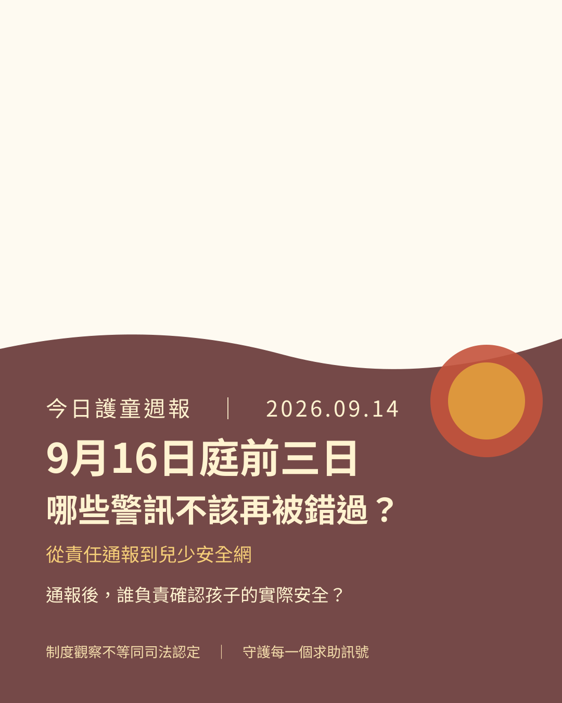

今天把9月16日庭期、責任通報與處遇紀錄、外婆求助與探視受限，以及官網、Global Protection Wall、Justice-for-Kaikai三個平台的工作放在同一張檢核表。

原先三則新聞保留：安全網、第一線與托育監管
① 高雄兒少安全網：近期公共討論聚焦地方政府是否即時辨識風險、完成跨單位交接，以及重大案件後能否提出可驗證的補強措施。不同城市、不同孩子的事件不能互相抵銷；最低標準應該一致：通報後誰負責、何時複核、何時升級。
② 社工政策三方向：兒少保護、提升社工待遇與守護社工心理健康必須一起看。人力、訓練、督導與心理支持不是附加福利，而是讓第一線完成查證、訪談與追蹤的安全基礎設施。
③ 《兒童托育服務法》：處罰、違法資訊揭露與監視影像保存有助於提高可追溯性，但影像不能代替訪視與專業判斷；真正要問的是誰會看、何時看、看見異常後誰必須處理。
閱讀來源
責任通報之後：紀錄不是終點，而是交接的起點
剴剴案相關公開資料需要把責任通報、處遇紀錄、訪視紀錄、群組訊息與後續聯繫放回同一條時間軸。單看一份紀錄，可能只看見一個時間點；交叉檢視才能追問：當時誰知道什麼、誰有機會確認、哪個警訊應該升級，以及未完成事項是否被下一位接手者看見。
不可只寫「已通報」
每一筆通報都應能找到接手人、處理期限、查核方式、風險判斷、回報對象與未完成事項。沒有接手與期限，通報容易變成流程終點。
必須標示證據層級
將「正式紀錄」「庭審摘述」「當事方說法」「媒體轉述」與「仍待釐清」分開，才不會把推測誤寫成法院已認定的事實。
閱讀來源
外婆求助與探視受限：不能把制度障礙倒過來責問家屬
在收出養安排、安置決策與接觸限制下，家屬未必能自由探視，也未必能親自確認孩子是否安全；家屬報警或求助後，更不代表照顧權會立即恢復。「報警不當然恢復照顧權」與「制度必須正面回應安全疑慮」可以同時成立。
因此，求助窗口不能只提供轉介。受理單位應說明：家屬可以提出什麼安全請求、誰負責受理、何時完成查核、如何通知結果、若對處理不服要向哪裡申訴，以及孩子的最佳利益如何被具體評估。
閱讀來源
9月16日開庭：庭前先把程序與事實邊界畫清楚
依本週整理的公開庭期資訊，2026年9月16日（三）14:30，台北高等法院，案號115年度上訴字第4688號（舊案號115審上訴字3545；一審北院114訴字443），同一庭期另有劉所長案。具體庭期、法庭與程序仍應以法院最新公告及正式庭訊為準。
| 庭前可確認 | 案號、開庭時間、公開旁聽規則、已公布的裁判或庭期資料，以及哪些資料可以合法公開引用。 |
|---|---|
| 庭上要分開 | 證人證詞、書證、勘驗、辯方與檢方主張、法院已認定事項；不要用新聞摘要取代判決或庭訊紀錄。 |
| 庭後要追蹤 | 程序是否延後、上訴範圍是否改變、法院是否作成裁定，以及後續資料何時可以公開查閱。 |
閱讀來源
兩個地區同步：三個守護平台本週優先工作
官網｜四語與證據分層
同步繁中、簡中、English、日本語版本；更新庭期、來源、事實／主張／待核實標籤，讓讀者能在同一頁看懂哪些已確認、哪些仍待法院或官方資料。
Global Protection Wall｜兩地入口
台灣與香港沿用同一份置頂快報與公開來源；香港入口採根路徑 /news/child-safety-network-20260914/，並保留留言牆、公告與兩站同步資料。
Justice-for-Kaikai｜庭前資料
持續校對時間軸、旁聽筆記與動畫專題，避免把藝術敘事當成證據，也避免把未經核實的社群說法當成案件事實。
閱讀來源
庭前三日的六項檢核：把警訊變成可追蹤問題
- 通報後，誰負責確認孩子的實際安全？
- 風險沒有消失時，何時必須升級處理？
- 訪視是否記錄看見的事實、詢問的問題與未解決風險？
- 跨機關交接是否有接手人、期限與回報結果？
- 家屬求助後，是否取得可追蹤、可複核的書面回應？
- 每一項決定，是否都能回到來源、時間與負責人？
編輯界限與公開資訊提醒
本頁不公開兒少非必要身分資訊，不呈現真實傷勢或施虐影像。新聞事實、官方回應、當事方主張與編輯分析分開標示；「制度斷點」是監督性分析，不是對任何個人的司法定罪。庭期與案件進度可能變動，請以法院正式公告與可查證的原始資料為準。
本期直接來源
來源用於核對公開事實與程序，不代表本站替法院或主管機關作成結論。